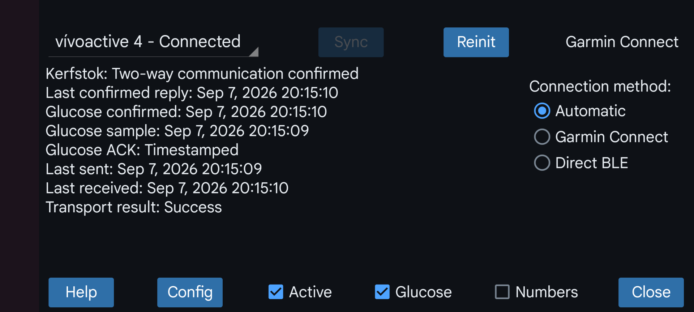

ar be de es fa fr hi it ja ko nl pl pt ru tr uk uz zh en
Kerfstok (اطلاعات بیشتر) برنامهای برای ساعتهای ورزشی Garmin با پشتیبانی از برنامههای شخص ثالث است. از نسخهٔ 1.6.0، روی ساعتهای بدون صفحهٔ لمسی هم کار میکند. کاربردهای آن عبارتاند از:
واردکردن عددها و تبادل آنها با Juggluco؛
نمایش مقدار گلوکز «دادههای پیوسته» دریافتی از Juggluco؛
نمایش گلوکز هنگام ورزش همراه سرعت و مسافت، و ثبت فعالیت برای نمایش بعدی در Garmin Connect.
این برنامهٔ ساعت میتواند از طریق بلوتوث به Juggluco وصل شود، مقدارها را تبادل کند و گلوکز فعلی را پیوسته نشان دهد.
«فعال»: اتصال این ساعت به Juggluco را فعال کنید.
«عددها»: مقدارها را روی ساعت وارد کنید و با Juggluco مبادله کنید. چند ساعت Kerfstok میتوانند همزمان گلوکز فعلی را دریافت کنند، اما فقط یکی از آنها میتواند مقدارها را نمایش دهد و ثبت کند.
«گلوکز»: تعیین میکند مقدارهای گلوکز به ساعت فرستاده شوند یا نه.
«روش اتصال»: روش ارتباط با ساعت را تعیین کنید:
«Garmin Connect»: اتصال از طریق برنامهٔ Garmin Connect.
«بلوتوث کممصرف مستقیم» (Direct BLE): بدون عبور از Garmin Connect مستقیماً با بلوتوث کممصرف به ساعت متصل میشود. این روش حتی بدون نصب Garmin Connect هم کار میکند و هنگام اجرای آن نیز قابل استفاده است. میتوانید ساعت را از تنظیمات بلوتوث Android جفت کنید و هرگز از Garmin Connect استفاده نکنید.
«خودکار»: ابتدا Garmin Connect را امتحان میکند و اگر موفق نشد، به Direct BLE میرود. روشِ واقعاً استفادهشده در بالای «روش اتصال» نمایش داده میشود.
«اتصال مستقیم حسگر به تلفن/ساعت (Libre 3)»: این گزینه وقتی وجود دارد که Libre 3 Kerfstok روی ساعت Garmin اجرا شود. با انتخاب «ساعت»، Kerfstok مستقیماً به حسگر Libre 3 متصل میشود و برای نمایش گلوکز دیگر نیازی به همراهداشتن تلفن نیست.
«تنظیمات»: حالت تیره، میانبرها، شناسهٔ ID و هشدارها را (برای Libre 3 Kerfstok) تنظیم کنید. (Config)
«همگامسازی»: دادهها را به ساعت بفرستید و دادههای ساعت را دریافت کنید.
«راهاندازی مجدد اتصال»: اتصال را دوباره مقداردهی اولیه میکند.
اگر اتصال ساعت کار نمیکند، چند مورد از راههای زیر را امتحان کنید:
«راهاندازی مجدد اتصال» را بزنید؛
بلوتوث تلفن را خاموش و روشن کنید؛
بلوتوث ساعت را خاموش و روشن کنید؛
«روش اتصال» را عوض کنید و در صورت نیاز بعداً برگردانید؛
ساعت را راهاندازی مجدد کنید؛
تلفن را راهاندازی مجدد کنید؛
در نسخههای قدیمی گاهی لازم بود Garmin Connect را اجرا کنید، بهاجبار متوقف کنید و دوباره باز کنید؛ یا حتی دادههای آن را پاک یا برنامه را دوباره نصب کنید. از Juggluco 11.0.0 به بعد معمولاً نیازی به این کارها نیست، اما ممکن است اکنون اتصال در حالت بستهبودن Garmin Connect بهتر باشد.